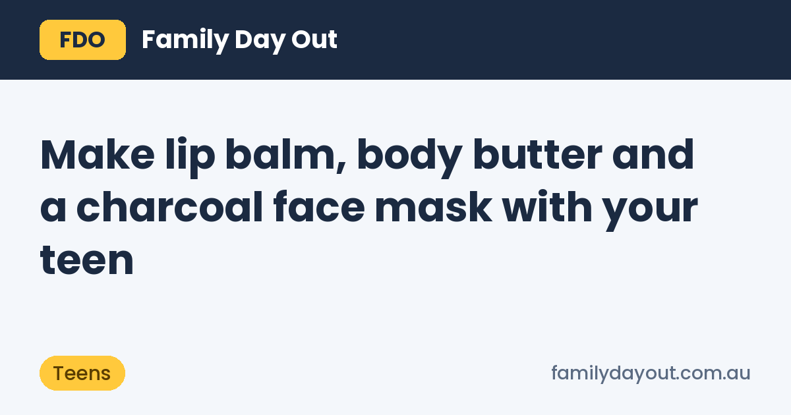

Make lip balm, body butter and a charcoal face mask with your teen

Teenagers who wouldn't be seen at a playground will often happily spend an afternoon making their own lip balm. It's half science lesson, half gift-making, and the results last for months. These three projects use a handful of raw ingredients and a double boiler (a heatproof bowl over a pot of simmering water).
Melting butters and oils is hot work, so a parent stays in the kitchen for the heating steps.
1. Cocoa butter lip balm
Makes about eight small tins or tubes.
- 2 tablespoons pure organic unrefined cocoa butter, grated or chopped
- 1 tablespoon organic unrefined shea butter
- 1 tablespoon castor oil (gives the glossy, slightly thick feel on lips)
- ½ teaspoon stearic acid to firm it up (optional, but handy in summer)
- 3 or 4 drops natural vitamin E oil, which helps the oils stay fresh for longer
Melt the cocoa butter, shea butter and stearic acid together in the double boiler. Take the bowl off the heat, stir in the castor oil and vitamin E, then pour into tins straight away. It sets in about 20 minutes at room temperature.
Too soft? Melt it again and add a little more cocoa butter or stearic acid. Too hard? Add a few drops more castor oil. Unrefined cocoa butter smells lightly of chocolate, which most teens like, so there's no need for any scent.
2. Whipped body butter
Makes one big jar, enough for a few weeks.
- ½ cup organic unrefined shea butter
- ¼ cup cocoa butter
- ¼ cup light oil: grapeseed absorbs fast, Moroccan argan feels a bit richer
- 1 teaspoon corn starch so it feels less greasy
Melt the two butters gently, stir in the oil, then put the bowl in the fridge for about an hour, until it's firm around the edges but still soft in the middle. Whip with electric beaters for 5 minutes until it's light and fluffy, add the corn starch and whip again. Spoon into a clean jar.
The body butters range also has mango butter and refined (unscented) shea if anyone in the family doesn't like the nutty smell of unrefined shea. More oils are in the carrier oils range.
3. Ten-minute charcoal face mask
This one needs no heat, so teens can make it on their own.
- ½ teaspoon activated charcoal
- 1 tablespoon aloe vera gel (the alcohol-free one is gentler on faces)
Mix into a smooth black paste, spread a thin layer on clean skin (not around the eyes), leave for 10 minutes and rinse off with warm water.
A warning from experience: charcoal stains grout, towels and white sinks. Do it over a dark towel, and rinse the sink straight away.
Safety tips
- Patch test anything new on the inside of the wrist first and wait a day.
- These are for skin only. Nobody eats the lip balm mix, however chocolatey it smells.
- If you add essential oils to the body butter, keep it to 1 drop per tablespoon for teens, and skip them for younger kids.
- Label jars with what's in them and the date you made them.
All the ingredients come from N-essentials in Keysborough, with click and collect on weekdays.
Get them out of the house too
Balms done, and the teens are restless? Here are places teens like near Keysborough, from skate parks to pools, or check the teens guide for all of Victoria.